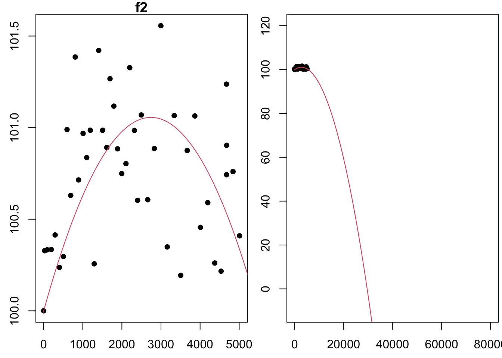

Task 3 Fit the Model
Maximum Likelihood Method for \(f_2\)
Consider the model \(f_2(t; a_1, a_2) = 100 + a_1t + a_2t^2\). The function \(f_2\) models the brightness of a lightbulb, measured as a percent of the original intensity of the lightbulb, given the number of hours the lightbulb as been on, \(t\). We will fit \(f_2\) to the list of 44 measurements, \((t_i,y_i)\), obtained from the data4led package using the seed 123.
Assuming the residuals (or errors) are independent and normally distributed (with mean 0 and standard deviation 1), the loglikelihood function for these errors is
\[\begin{align*} \ell_2(a_1,a_2; \mathbf{t},\mathbf{y}) = 44\ln\left(\frac{1}{\sqrt{2\pi}}\right) + \sum_{i=1}^{44} \left(-\frac{1}{2}(y_i - 100 - a_1t_i - a_2t_i^2)^2\right). \end{align*}\]We want to find the maximum of \(ℓ_2\). The first partials of \(ℓ_2\) are
\[\begin{align*} \frac{\partial\ell_2}{\partial a_1} = \left(\sum_{i=1}^{44} (y_i - 100)t_i\right) - \left(\sum_{i=1}^{44}t_i^2\right)a_1 - \left(\sum_{i=1}^{44}t_i^3\right)a_2 \end{align*}\] and \[\begin{align*} \frac{\partial\ell_2}{\partial a_2} = \left(\sum_{i=1}^{44} (y_i - 100)t_i^2\right) - \left(\sum_{i=1}^{44}t_i^3\right)a_1 - \left(\sum_{i=1}^{44}t_i^4\right)a_2 \end{align*}\]
To find the critical points of \(ℓ_2\), we set each partial derivative above equal to zero and then solve
\[\begin{array}{ll} \left(\sum_{i=1}^{44} (y_i - 100)t_i\right) - \left(\sum_{i=1}^{44}t_i^2\right)a_1 - \left(\sum_{i=1}^{44}t_i^3\right)a_2 &= 0 \\ \left(\sum_{i=1}^{44} (y_i - 100)t_i^2\right) - \left(\sum_{i=1}^{44}t_i^3\right)a_1 - \left(\sum_{i=1}^{44}t_i^4\right)a_2 &= 0. \end{array}\].
We notice that this system is of the form
\[\begin{align*} b_1 - c_{11}a_1 - c_{12}a_2 &= 0 \\ b_2 - c_{21}a_1 - c_{22}a_2 &= 0, \end{align*}\]with
\[\begin{align*} c_{11} = \sum_{i=1}^{44}t_i^2 \\ c_{12} = c_{21} = \sum_{i=1}^{44} t_i^3, \\ c_{22} = \sum_{i=1}^{44} t_i^4, \\ b_1 = \sum_{i=1}^{44} (y_i - 100)t_i, \\ b_2 = \sum_{i=1}^{44} (y_i - 100)t_i^2. \end{align*}\]Since we noticed this system is of a general form we have already solved, then we can use the solution from previous work. We found that the solution to this system is
\[\begin{align*} a_2 = \frac{c_{11}b_2 - c_{12}b_1}{c_{11}c_{22} - c_{12}^2}\text{ and }a_1 = \frac{b_1 - c_{12}a_2}{c_{11}}. \end{align*}\]
Below we use R to calculate \(a_1\) and \(a_2\) using the formula above.
Code
[1] 0.0007697492The critical point for \(ℓ_2\) is \((a_1,a_2)=(0.0011909,−1.7435215×10−7)\). Let’s use the second derivative test to confirm that this critical point is the location of a maximum of \(ℓ_2\). The second partials of \(ℓ_2\) are below. We will need the second partials for the second derivative test.
\[\begin{align*} \frac{\partial^2\ell_2}{\partial a_1^2} = - \sum_{i=1}^{44}t_i^2 \\ \frac{\partial^2\ell_2}{\partial a_2^2} = - \sum_{i=1}^{44}t_i^4 \\ \frac{\partial^2\ell_2}{\partial a_2 \partial a_1} = -\sum_{i=1}^{44}t_i^3 \end{align*}\]
We then compute
\[\begin{align*} D = \left(\frac{\partial^2\ell_2}{\partial a_1^2}\right)\left( \frac{\partial^2\ell_2}{\partial a_2^2}\right) - \left(\frac{\partial^2\ell_2}{\partial a_2 \partial a_1}\right)^2 = \left(- \sum_{i=1}^{44}t_i^2\right)\left(- \sum_{i=1}^{44}t_i^4\right) - \left(- \sum_{i=1}^{44}t_i^3\right)^2. \end{align*}\]
To use the second derivative test, we need numerical values for both D and \(\frac{∂^2ℓ_2}{∂a_1^2}\). The code below computes both these values.
Code
f2 <- function(x,a0=0,a1=0,a2=1){
a0 + a1*x + a2*x^2
}
a0 <- 100
a1 <- best.a1
a2 <- best.a2
x <- seq(-10,80001,2)
par(mfrow=c(1,2),mar=c(2.5,2.5,1,0.25))
plot(t,y,xlab="Hour ", ylab="Intensity(%) ", pch=16,main='f2')
lines(x,f2(x,a0,a1,a2),col=2)
plot(t,y,xlab="Hour ", ylab="Intensity(%) ", pch=16, xlim = c(-10,80000),ylim = c(-10,120))
lines(x,f2(x,a0,a1,a2),col=2)